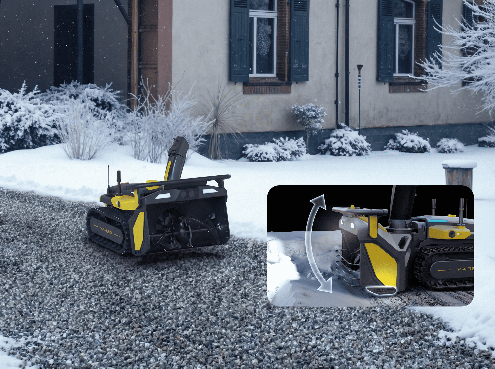
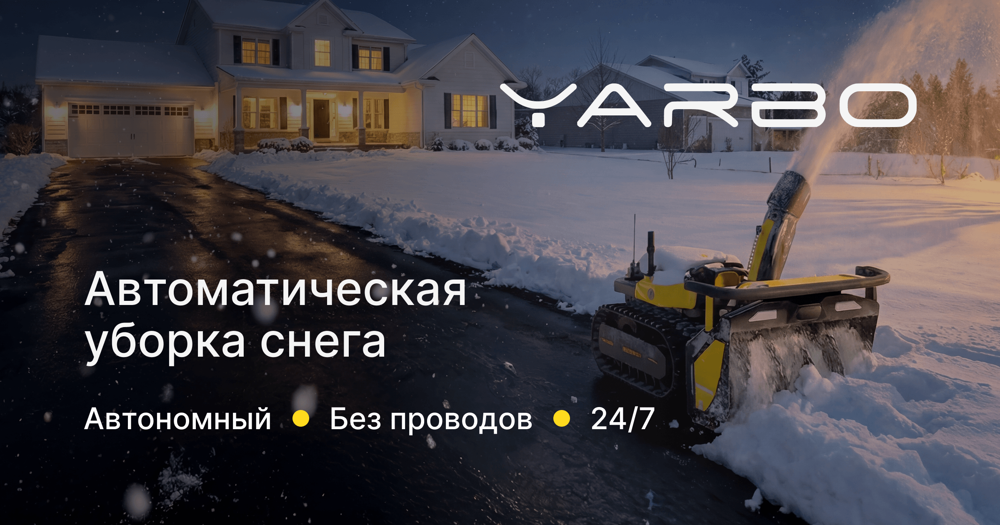
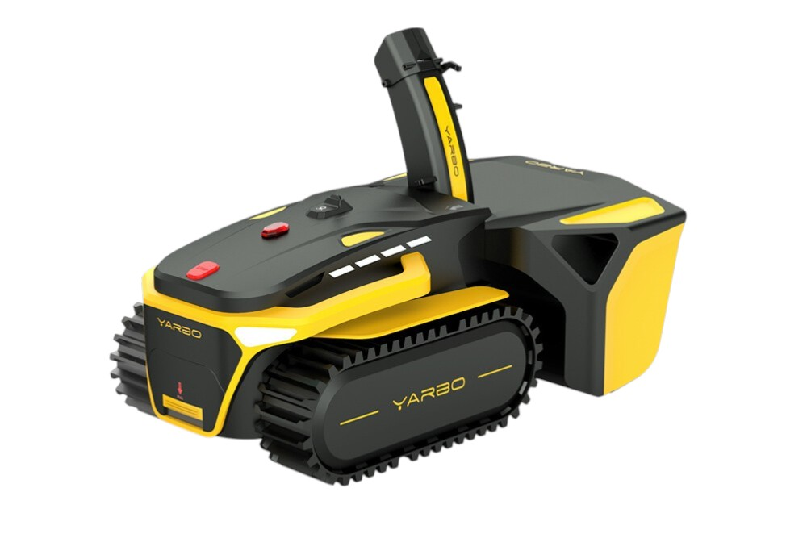
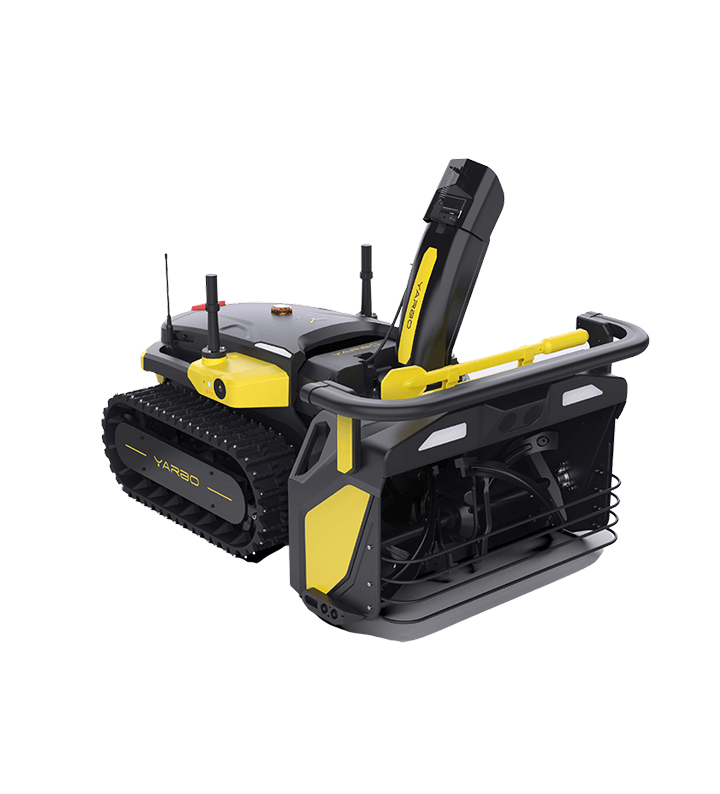

01
Карта участка
Фиксируем границы, дорожки, зоны безопасности и направление движения.
Модульный робот с GPS-RTK-навигацией выполняет повторяющиеся работы по расписанию. Зимой он становится снегоуборщиком, летом — косилкой, осенью — воздуходувкой.

Yarbo Y Series · Snow Blower Gen 2Собрали реальные сценарии Yarbo Snow Blower: подъездная дорожка, парковка и обслуживание базы. Фото: yarbo-russia.ru/snowblower.



Yarbo Core остаётся в основе. Навесное оборудование подключается к базе и получает общий маршрут, расписание и управление в приложении.
Фиксируем границы, дорожки, зоны безопасности и направление движения.
Настраиваем расписание, скорость, перекрытия и параметры конкретного модуля.
Робот выполняет маршрут, реагирует на препятствия и возвращается на док-станцию.
Цены приведены отдельно для удобного планирования. Финальная стоимость подтверждается после выбора поколения, доставки и работ на объекте.
| Позиция | Для чего | Что важно | Ориентир |
|---|---|---|---|
| Yarbo Snow Blower YB-GS-02 | Автономная уборка снега | до 560 м²/заряд, захват 61 см, выброс 1,8–12,2 м | 880 000 ₽ |
| Lawn Mower PRO | Стрижка газона | до 25 000 м², высота среза 30–102 мм | 880 000 ₽ |
| Blower | Листья и лёгкий мусор | направленный поток, автономные сценарии по зонам | 810 000 ₽ |
| Lawn Mower | Регулярная стрижка газона | картирование участков и расписание ухода | 810 000 ₽ |
| Core / базовый модуль | Универсальная роботизированная база | гусеничный привод, батарея, RTK и приложение | 590 000 ₽ |
| Комплект 2 в 1 | Lawn Mower PRO + Snow Blower | круглогодичный сценарий для снега и газона | 1 170 000 ₽ |
| Yarbo Pro 3 в 1 | Lawn Mower PRO + Snow Blower + Blower | три сезона, один Core и единая карта участка | 1 390 000 ₽ |
Выбирайте сезонный минимум или сразу закрывайте задачи частной территории и коммерческого объекта.
Yarbo Core + Snow Blower Gen 2. Автономная уборка снега с установкой и картированием.
Core, снегоуборщик, газонокосилка и воздуходувка. Один робот для зимы, лета и осени.
Три сезонных модуля плюс триммер для кромок и зон, где нужна аккуратная обработка.
Ниже — позиции из открытого каталога Yarbo Russia с назначением и ориентиром цены. Менеджер проверит совместимость с вашим Core и сезоном.
| Позиция | Назначение | Цена |
|---|---|---|
| Модуль Lawn Mower Pro | Профессиональная стрижка газона | 290 000 ₽ |
| Модуль Blower | Сдув листьев и лёгкого мусора | 220 000 ₽ |
| Модуль Lawn Mower | Регулярный уход за газоном | 220 000 ₽ |
| Модуль Trimmer | Обработка кромок и труднодоступных зон | 89 000 ₽ |
| Скребок для снегоуборщика | Очистка и обслуживание рабочей зоны | 3 000 ₽ |
| Отвал снегоуборочной машины | Сдвиг свежего снега перед проходом шнека | 18 000 ₽ |
| Гусеницы Snow Blower | Замена/сцепление для зимней работы | 32 900 ₽ |
| Шипы противоскольжения, 100 шт. | Сцепление на льду и уклонах | 3 000 ₽ |
| Аккумулятор | Дополнительный рабочий цикл | 108 000 ₽ |
| Док-станция | Автоматическая зарядка и парковка | 80 000 ₽ |
| RTK-антенна | Точное позиционирование на участке | 1 900 ₽ |
| Крепление RTK-антенны | Монтаж антенны на объекте | 900 ₽ |
| Дата-центр | Связь и управление удалёнными сценариями | 27 000 ₽ |
| HaLow-антенна дата-центра | Дальний беспроводной канал | 800 ₽ |
| HaLow-антенна вездехода | Связь робота с дата-центром | 900 ₽ |
| Bluetooth-антенна | Локальное подключение аксессуаров | 800 ₽ |
| PoE-адаптер | Питание сетевого оборудования | 1 700 ₽ |
| Проводное зарядное устройство | Резервная зарядка вне док-станции | 9 200 ₽ |
| Шнур питания от аккумулятора | Подключение батареи и сервисные работы | 6 200 ₽ |
| Фаркоп | Буксировка лёгкого инвентаря | 4 500 ₽ |
| Крепление задней скобы | Монтаж заднего навесного оборудования | 92 000 ₽ |
| Лопата снегоуборочная | Ручная доработка кромок и ступеней | 900 ₽ |
| Смазка гусениц | Регулярное обслуживание ходовой части | 3 800 ₽ |
| Чехол Core | Хранение базового модуля | 2 800 ₽ |
| Чехол Snow Blower | Защита зимнего модуля при хранении | 2 800 ₽ |
| Чехол Lawn Mower | Защита модуля газонокосилки | 2 800 ₽ |
| Чехол Blower | Защита воздуходувки | 2 800 ₽ |
| Чехол интеллектуального вспомогательного модуля | Защита Smart Assist | 1 500 ₽ |
| Режущий диск + болты | Расходник для Lawn Mower | 1 100 ₽ |
| Режущие лезвия + болты, 40 шт. | Запас лезвий для сезонного обслуживания | 3 000 ₽ |
| Прямые лезвия + болты, 2 шт. | Расходник для Lawn Mower Pro | 15 000 ₽ |
| Отрезной диск + болты | Расходник для Lawn Mower Pro | 8 600 ₽ |
| Набор штифтов/шплинтов, 8 комплектов | Фиксация модулей и сервисные замены | 3 000 ₽ |
Видеоматериалы официального канала Yarbo. Откройте ролик на YouTube, чтобы посмотреть демонстрацию и инструкцию в полном качестве.
Установка газонокосильного модуля и подготовка рабочей зоны.
Открыть видео ↗Составляем карту, устанавливаем док-станцию, настраиваем рабочие зоны, обучаем операторов и остаёмся на связи после запуска.